- Installing HBB
- Using HBB
- HBB Settings
- Show free space
- Check free space
- Hide installed apps
- Retrieve my ratings
- Background music
- Rumble
- Update icons
- Offline mode
- Tool tips
- Confirm cancelling
- Wiimote Power off
- Updated Apps Pop-up
- Use SD card
- Use Other Repositories
- Custom category
- Custom sort
- Disable USB mount
- Disable the character in the Menu
- Use Wiimote like GC controller
- Check for updates
- Use secondary server
- Common issues with HBB
- Can't initialise network / Read errors
- Issues mounting my SD or USB device
- Can't find the IP of CodeMii
- Freezing when trying a repository
- Updating HBB fails
- Freezing checking icons
- Weird lines before loading the graphic user interface
- Crashing to numbers screen (code dump) when downloading
- Free space detected is incorrect
- Applications don't download / download button won't work
- Getting help with HBB
Homebrew Browser Guide
Welcome to the Homebrew Browser guide. In this guide we sometimes abbreviate HomeBrew Browser as HBB. This guide will help you in running HBB and show you how to use all the features HBB has to offer as well as offer some suggestions to common issues. Thanks to phpBB for this document style and to WiiBrew for the controller images.
Last updated: 22 Feb 2011
Table of Contents
1. Installing HBB
Installing the Homebrew Browser is quite simple once you have installed the Homebrew Channel.
- Download the latest version of the Homebrew Browser.
- Extract the homebrew browser zip file.
- Copy the homebrew_browser folder to the /apps folder on your SD/USB device. (Please create the /apps directory on the root of your SD/USB device if it doesn't exist)
- Ensure that the little write lock switch on your SD/USB device card is off.
- Launch HBB via the Homebrew Channel.
2. Using HBB
2.i. Loading HBB
When the Homebrew Browser is loaded, it will show a console screen (white text on a black screen) which shows you everything it's doing. This screen is useful for debugging and knowing where issues lie.
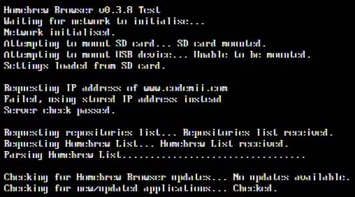
As HBB loads it will do the following: (the text in brackets is what HBB says as it prints to the screen)
- Initialise your Wii's network (Waiting for network to initialise...)
- Mount your SD/USB devices (Attempting to mount SD card...)
- Load your settings if they exist (Settings loaded from SD card.)
- Attempt to query the IP address of CodeMii.com (Requesting IP address of www.codemii.com)
Check to see that the CodeMii server is who it says it is (Server check passed)- removed as of v0.3.9c- Download the Repositories list (Requesting repositories list...)
- Download the Homebrew list which contains all the applications (Requesting Homebrew List...)
- Parse the Homebrew list (Parsing Homebrew List)
- Check for any missing files including meta.xml, icon.png and loop.mod
- Check for Homebrew Browser updates (Checking for Homebrew Browser updates...)
- Check the HBB temporary icon image files
If it's the first time ever that you've run the HBB or you have less than 200 image files, it will begin to download a zip file containing icon image files of each application. At the time of this writing this guide there are over 300 applications, so this zip file contains those application's image files. (Downloading zip file containing current image files)
It's highly recommended to let HBB complete this process, otherwise HBB will need to download one image file at a time which is very time consuming. - Check to see if there is any news about which applications have been updated (Checking for new/updated applications...)
- Load to the graphic user interface where you can now start
using it
As you can see HBB does a whole lot of things before starting up.
2.ii. Updating HBB
You can update the Homebrew Browser via two methods. The first way is to update manually which involves downloading the latest version of the Homebrew Browser via the CodeMii website and then installing HBB as shown above.
The other way which is the easiest way is to let the Homebrew Browser update itself. When the Homebrew Browser loads, it checks to see if there are any updates. If there is an update, HBB will show you the version number and the new changes made to that version (example below).
v0.3.7
- Compiled with DevKitPPC r19, libogc 1.8.1 and libfat 1.0.6
- Expanded the size of the HBB updated applications display when starting up
- Added homebrew sorter support
- Disabled write test as some cards failed it
- Fixed some bugs (check the description in HBB for more info)
HBB will ask you if you want to update or cancel. If you proceed to update, it will download the new boot.dol, meta.xml and icon.png files. Once the update is complete, it will take you back to the Homebrew Channel where you can load up the new HBB version.
If for any reason it fails, it will tell you so and will restore the previous version of HBB for you. You should try to update again or manually install the new version yourself; but before doing so, please let us know the issue you experienced.
2.iii. Learning the interface
The Homebrew Browser should be self-explanatory however it can be daunting running software for the first time.
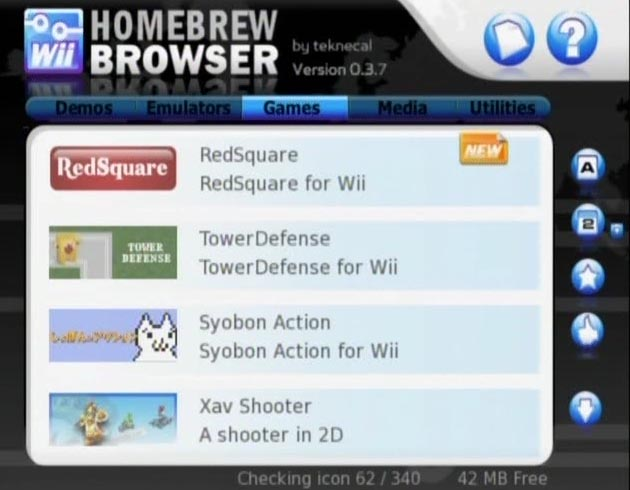
From the top we can see 5 categories; these categories include Demos, Emulators, Games, Media and Utilities. You are able to change categories by selecting a category from the list (by pressing A) or move one category left or one category right by pressing the Dpad left or right on the Wiimote. It may take a few moments for it to load the new category.
On the top right we can see 2 buttons, one looks like a letter/card and the other is a question mark. The letter/card when pressed allows you to see what homebrew applications you have on your SD/USB device. The question mark is the help menu.
Going down, we can see 4 homebrew applications shown, this section is what we will refer to as the homebrew list. When moving over the applications in the homebrew list, they will be highlighted at which time you press the A button to bring up more information about that application including a download button. You can scroll through the list be holding B and moving the Wiimote down or up or you can press the Dpad down and up.
From the homebrew list, you can see little icons to the right of each application. There is a "New" icon which shows this application is new or has been updated. If an application is installed you are shown a tick icon. If the application is outdated you are shown a question mark icon. If the application is set to be queued to be downloaded using the download queue you are shown a plus icon.
On the right you can see 5 icons, the first 4 are for sorting the homebrew list (e.g. by name, downloads, etc) and the last icon is for accessing the download queue.
On the bottom we can see text saying "Checking icon xxx/xxx". The Homebrew Browser needs to load all the icons of each homebrew application so it can display the icon next to the name of each application; so in order to do this it loads each icon into memory so it can be accessed quickly. The process of checking icons can be time consuming but you can definitely use HBB when it's doing so (scrolling and changing categories may be slower). If an icon file isn't present, HBB will download it.
The last thing we have is on the bottom right which is text that shows how such free space your SD/USB device has left.
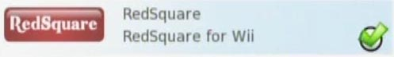
We can see if an application is installed by seeing the tick.
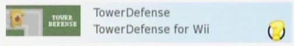
If an the Homebrew Browser believes that there is an updated version of an
application you have installed it shows the question mark.
2.iv. Viewing applications
When you choose an application you are interested in, the following information is shown about the application.
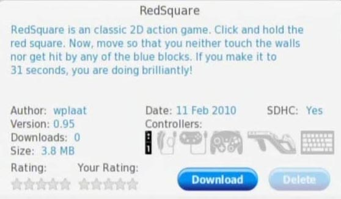
- Name
- Brief description
- Author
- Version
- Size
- Date
- SDHC support
- Download count which is the total amount of downloads for the application.
- Rating which shows the average user rating for the application
- Controllers shows the controllers supported by the application
You are also shown the download or update (if you have the application
installed) and delete buttons.
2.v. Sort the Homebrew list
As the homebrew list contains more and more applications it's important to be able to sort homebrew applications. You are able to sort the list by name, date, downloads and rating.
Name icon – This icon sorts the list by name.
Date icon – This icon sorts the list by date format. By default the listings are sorted by latest releases.
Star icon – This icon sorts the list by popularity. Popularity is determined by the ratings that users give to an application.
Thumbs up icon – This iron sorts the list by the number of times all users have downloaded the application.

 When select a sort method you will see a small up and down arrow beside
that sort method's icon. These arrows represent how the list is being sorted.
When clicking an icon for the first time, it will sort the list highest to lowest. When clicking the icon again, it sorts the list lowest to highest.
E.g. Selecting date two times will sort the list oldest (top) to latest (bottom).
When select a sort method you will see a small up and down arrow beside
that sort method's icon. These arrows represent how the list is being sorted.
When clicking an icon for the first time, it will sort the list highest to lowest. When clicking the icon again, it sorts the list lowest to highest.
E.g. Selecting date two times will sort the list oldest (top) to latest (bottom).
2.vi. Rating applications
You are able to give applications ratings between 1 to 5 stars (higher is better). Your rating will be sent and stored on our server which will calculate the overall rating of the application once every 24 hours.
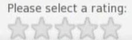
To give an application a rating, click on the application from the list, and select the "Your Rating" text or the stars underneath. You will then be shown the stars and allowed to select a rating. Once done, the rating will be sent to the server. If the rating is accepted, you will see your own rating on the application.
2.vii. Download, update and delete applications
The Homebrew Brower’s main function is to allow you to download applications from the internet using your Wii.
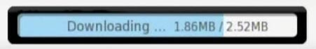
Once you select an application, it shows you information on that application and you are then able to download the application by pressing the Download button.
You will be shown a progress bar showing the progress of the download which may take some time.
After it's downloaded the zip file, it will extract the zip file whilst
giving you a progress on that too.
Once it has all being completed, the download button will disappear and the Delete button will become active.
You are able to update the applications installed on your SD/USB device by using the Update button. When a new version of an application comes out and you have an older version of that application installed, you will be able to press the update button which will download the latest version of that application for you. You will be shown a progress bar exactly the same as when downloading.
If you wish to remove an application from your SD/USB device you can easily do this by pressing the Delete button. The application will be deleted from your SD/USB device and on success the delete button will be faded out and the Download button will become active again.
A quick way to delete applications is to press the letter/card icon on the top right as it allows you to see all your homebrew applications that you have on your SD/USB device.
2.viii. Download, update and delete queue
The Homebrew Browser allows you select applications which you wish to add in a queue to be downloaded. This queue is represented by the Download arrow found on the bottom right of the screen.
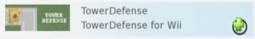
To add applications to the queue, in the homebrew list you press the Plus (+) button
on the Wiimote when your cursor is over the application. This will bring up a Plus icon which shows that the application is in the queue.
You can remove applications from the queue by pressing the Minus (-) button
which will remove the Plus icon.
Once you are ready to download applications, first view the queue by pressing the
Download arrow. Here you will see all the applications ready to be
downloaded.
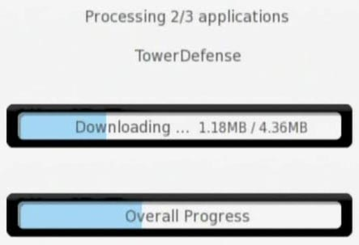
To begin the automatic downloading of applications, press the download
arrow again. Once you begin, you will be shown the amount of applications to be downloaded and the progress
like you do when downloading applications yourself. Once completed, it will bring you back to the download queue where you will find that all your applications have a tick on them which mean that they are installed.
Updating your applications is similar to adding applications to the download queue. Once you are viewing your applications on the SD/USB device, you just click the download queue button and it will show all the applications which had question marks on them are now queued. To continue press the download queue button again and it will automatically update all applications which are out of date. Once finished, it will return you back to your applications installed list.
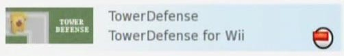
Deleting applications is once again similar to adding applications to the download
queue. Instead of pressing the Plus (+) button you now press the Minus (-)
button on each application to delete it. You press the download queue button
twice like last time, and it will being to delete the applications you have
selected from your SD/USB device.
You can do all 3 of these things at the same time.
2.ix. Using the controllers
Below are the controls available when HBB is starting up.
| 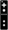 | Action | |
| Accept HBB update | ||
|
|
Cancel download/extracting images on first run | |
| Return to loader | ||
| Work offline | ||
| Revert to CodeMii repository |
Below are the controls available when HBB is in the graphic user interface.
| Action | ||
| 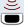 | Move pointer | |
|
|
Hold and move Wiimote down / up to scroll through list | |
| Click buttons | ||
|
|
Cancel download/extract/delete | |
| / | 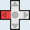 / | Previous / Next category |
| / | 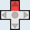 / | Scroll up and down the list slowly |
| / | Remove / Add application to queue | |
| Menu Hold to return to loader |
2.x. Accessing the menu
You can access the menu by pressing the Home button on your Wiimote. From the menu you can select to change your settings, reboot your Wii or return to the Homebrew Channel.

3. HBB Settings
You can access the settings by pressing the Home button on your Wiimote and selecting Settings.
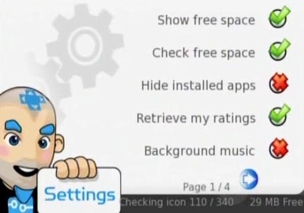
3.i. Show SD card space
If enabled, this option shows the free space of your SD/USB device on the bottom right of the screen.
3.ii. Check free space
If enabled, before downloading applications your SD/USB device is checked to ensure there is enough free space. It is recommended that you disable this option if you have an SD/USB device of 4GB+ or if you experience that HBB reports incorrect free space.
3.iii. Hide installed apps
If enabled, the applications you have installed will be hidden from the lists. They will still viewable from the installed application list (top right letter/card icon).
3.iv. Retrieve my Rating
If disabled, your ratings will not be retrieved from the server. You will still be able to rate applications.
3.v. Background Music
Select this to turn on or off the background music. You can have your own background music by placing an MP3, OGG or MOD file in /apps/homebrew_browser/. It firstly looks for an MP3, then OGG and lastly an MOD file.
3.vi. Rumble
Enable or disable the rumble on your Wiimote when moving your cursor over buttons
3.vii. Update icon
If enabled, the Homebrew Browser will always download the icon.png file when downloading applications. Please disable this option if you have your own custom icons, so they won’t get overwritten.
3.viii. Offline mode
Enabling offline mode means the Homebrew Browser will not initialise your network or use the network at all, good if you want to manage your applications.
3.ix. Tool tips
Enable or disable the tips which show you what buttons do what when moving your cursor over buttons.
3.x. Confirm cancelling
If enabled, HBB will prompt you to confirm you want to cancel a download when you press the B button when downloading applications.
3.xi. Wiimote Power off
If enabled, the Wii can be turned of via the Wiimote by pressing the power button. Some users may have issues where HBB turns off the Wii automatically, if so please disable this option.
3.xii. Updated Apps Pop-up
If enabled, HBB will show pop-up with added/updated applications if there are any available. It's a quick way to see what has been added to HBB.
3.xiii. Use SD card
Enable this option if you wish to download applications to your SD card otherwise turn this off if you wish to download applications to a USB device.
3.xiv. Use Other Repositories
HBB allows you to browse other repositories than the official one. This may be useful for experienced users as some repositories contain potentially dangerous applications. Another use for repositories is to allow developers to provide quick updates to their applications. Please restart HBB for this to take effect. When HBB is starting up, you will see it say "Using repository: xxxx".
3.xv. Custom category
Allows you to select the starting category when HBB loads other than the default Games category.
3.xvi. Custom sort
Allows you to select the starting sort order when HBB loads other than the default sort by date.
3.xvii. Disable USB mount
Allows you to disable mounting the USB device when HBB loads. This might be useful if HBB is unable to load the USB device and it freezes when trying to do so.
3.xviii. Disable the character in the Menu
Allows you to disable the character that appears in the Menu (if he freaks you out!)
3.xix. Use Wiimote like GC controller
Allows you to use the Wiimote like the Gamecube controller in the sense that you would use the Wiimote side ways and therefore not need the infrared sensor.
3.xix. Check for updates
Allows you to enable or disable the option to check for Homebrew Browser updates.
3.xxi. Use secondary server
Allows you to bypass the primary CodeMii server and use the secondary server instead.
4. Common issues with HBB
4.i. Can't initialise network / Read errors
Firstly make sure that your Wii can access the internet, you can check
this by going to the Internet Channel or viewing the Weather/News channel
and see if they work.
If you do have internet access, when you are in the Homebrew Channel there
is a little globe icon on the bottom right, if that's not lit up then
homebrew will have issues initialising your Wii's network.
Occasionally you might also experience read errors, some of these might indicate the CodeMii website is down, other times if it keeps happening it may have to do with your Wii configuration.
Some suggestions include:- Restart HBB
- Check that the CodeMii website works
- Make sure you have the latest version of the Homebrew Browser
- Changing your wireless channel
- Changing your wireless encryption (e.g. using WEP instead of WPA)
- Moving your Wii closer to your Wireless router
- Changing USB slots on the Wii if you are using a USB LAN adapter
4.ii. Issues mounting my SD or USB device
Sometimes the Homebrew Browser won't be able to mount your SD/USB device. This usually happens either because that card isn't compatible with the way these devices are mounted or because the SD/USB device isn't formatted to FAT or FAT32.
Some suggestions include:- Check to see the write lock switch on the SD/USB device isn't set to on
- Re-formatting your SD/USB device and do a chkdsk
- Re-format your SD/USB device with the following command: "format h: /fs:fat /a:4096"
- Check the SD/SDHC compatibility page at WiiBrew
4.iii. Can't find the IP of CodeMii
You may see a message appear in the Homebrew Browser saying that it can't find the IP address of CodeMii, this means it's failing the DNS lookup of www.codemiii.com. There is also a stored IP address in HBB which the Homebrew Browser will use if it can't find the IP address of CodeMii.
You should try:- Changing your DNS servers
- Adding a temporary DMZ on your router to point to the Wii's IP address
4.iv. Freezing when trying a repository
There can be a number of reason by a repository might not work. Some reasons include that the repository website may be down or they may be having DNS issues, their homebrew list file doesn't exist or may be invalid, etc.
You should try:- Restarting HBB
- Visiting the repositories website (if it's shown, the repository list can be found here) and checking the DNS is working correctly
- Try the homebrew list file on the website (e.g. www.codemii.com/hbb/homebrew_browser/listv036.txt)
- Contact the author of that repository
4.v. Updating HBB fails
Sometimes when updating the Homebrew Browser may fail, the most common reason is that the file size of the new boot.dol file doesn't match the expected size.
You should try:- Restarting HBB and try updating again
- Take note of the error and contact us
- Manually update as a last resort
4.vi. Freezing checking icons
When the Homebrew Browser is checking icons, it can sometimes lead to the Homebrew Browser freezing or that the checking icons counter gets stuck.
You should try:- Restarting HBB
- Removing the /apps/homebrew_browser/temp directory
- Contact us if it keeps occurring
4.vii. Weird lines before loading the graphical user interface
When the Homebrew Browser is loading the graphical user interface, you will see three lines with all sorts of colours shown. These lines are completely normal and they happen because HBB re-initialises the video. Eventually with future versions of HBB, it will load directly to the graphical user interface so you won't see these lines anymore.
4.viii. Crashing to numbers screen (code dump)
Occasionally the Homebrew Browser may suddenly show a screen that has lots of numbers on it, this is what's known as a code dump. All this means is that HBB has crashed and you should restart your Wii (or press A on the Gamecube controller). These code dumps will not affect your Wii.
Receiving code dump when downloading applications
Receiving code dumps when the Homebrew Browser is downloading applications is a known issue that we are working to resolve. This code dump happens randomly either when starting a download, when a download is running or when there are downloads that have been queued. You should just restart your Wii and load up HBB again.
Receiving code dump when loading Homebrew Browser
If you receive a code dump when loading the Homebrew Browser you should try:- Restarting HBB
- Removing the /apps/homebrew_browser/temp directory
- Removing HBB and re-installing HBB
If you receive a code dump at any other time, please do let us know about it and also include what you were doing when it happened and if you can reproduce the code dump.
4.ix. Free space detected is incorrect
If you have a 4GB or larger SD/USB device, when the Homebrew Browser loads you may notice that the free space reported by the Homebrew Browser is incorrect. This may lead to problems with downloading if it says "Not enough free space". If you receive this error, please turn off the Check free space setting.
4.x. Applications don't download / download button won't work
You may experience that the Homebrew Browser no longer lets you download any application which is usually related to a controller problem. You should try unplugging any Gamecube controllers, nunchucks, dance pads, etc, anything other than the Wiimote, restart HBB and try again.
5. Getting help with HBB
There are various support channels for the Homebrew Browser.
- You can speak with other Wii users on IRC at #wiihelp on the EFNet server
- You can post on the WiiBrew forums
- You can post on the WiiBrew Wiki
- You can post on the CodeMii website
- You can contact me at teknecal@gmail.com, teknecal on Youtube or teknecal on IRC